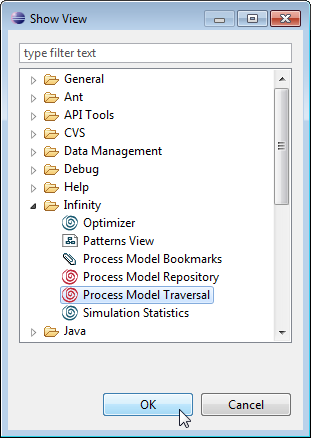
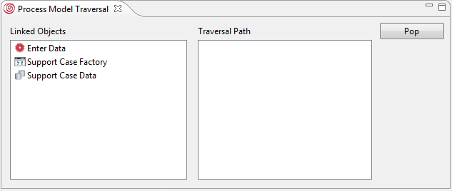

If the Process Model Traversal view is not already open, choose Window > Show View > Other... in the main menu and from the upcoming dialog Process Model Traversal.

Figure: Opening the Process Model Traversal View
In the Process Model Traversal view you can traverse a path starting from a selected element in a diagram or the Outline view. In the left area the list of Linked Objects depending on the selected element is displayed. The view updates its content each time you perform one step forward in your traversal path by double-clicking a selected element in the list of Linked Objects. To return to your previous position, push the Pop button in the view. When your traversal path has been determined, select the elements and click on the diagram canvas to place them in the diagram one by one.

Figure: The Process Model Traversal View